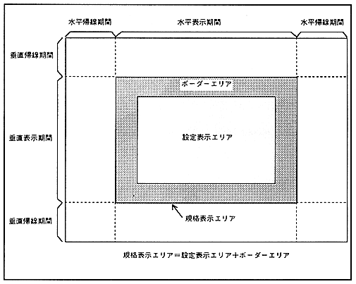

VDP2 outputs image signals according to NTSC or PAL TV, 31kHz monitor, and high-definition monitor depending on the TV screen mode. The TV screen is composed of a vertical display period and a vertical blanking period (V blank period), and is a collection of rasters each composed of a horizontal display period and a horizontal blanking period (H blank period). The configuration of the TV screen is shown in Figure 2.2.
∙ The part where the horizontal display period and vertical display period overlap is called each TV system 132 border area and can output black or back screen.
Figure 2.2 TV screen configuration
